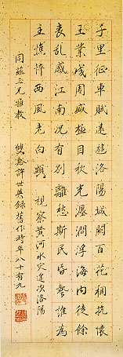

義助慰安婦 —— 李敖百件珍藏義賣藝術品（第13件） 品 名：A13. 許世英視察黃河水災詩 預估價：10 萬 成交價：22 萬 說 明： 本件作品是曾被慈禧太后召見的清朝大官，後來出任北洋政府國務總理的許世英，八十九歲時視察黃河水災途次洛陽，有感而發寫給蕭同茲的一首詩。這幅墨蹟的特點是：字寫在上有金點的「灑金紙」上。從這幅作品，我們可以看出上一輩的人如何交友、如何寫東西，以及如何關心民間疾苦的情意。 
本件作品是曾被慈禧太后召見的清朝大官，後來出任北洋政府國務總理的許世英，八十九歲時視察黃河水災途次洛陽，有感而發寫給蕭同茲的一首詩。這幅墨蹟的特點是：字寫在上有金點的「灑金紙」上。從這幅作品，我們可以看出上一輩的人如何交友、如何寫東西，以及如何關心民間疾苦的情意。